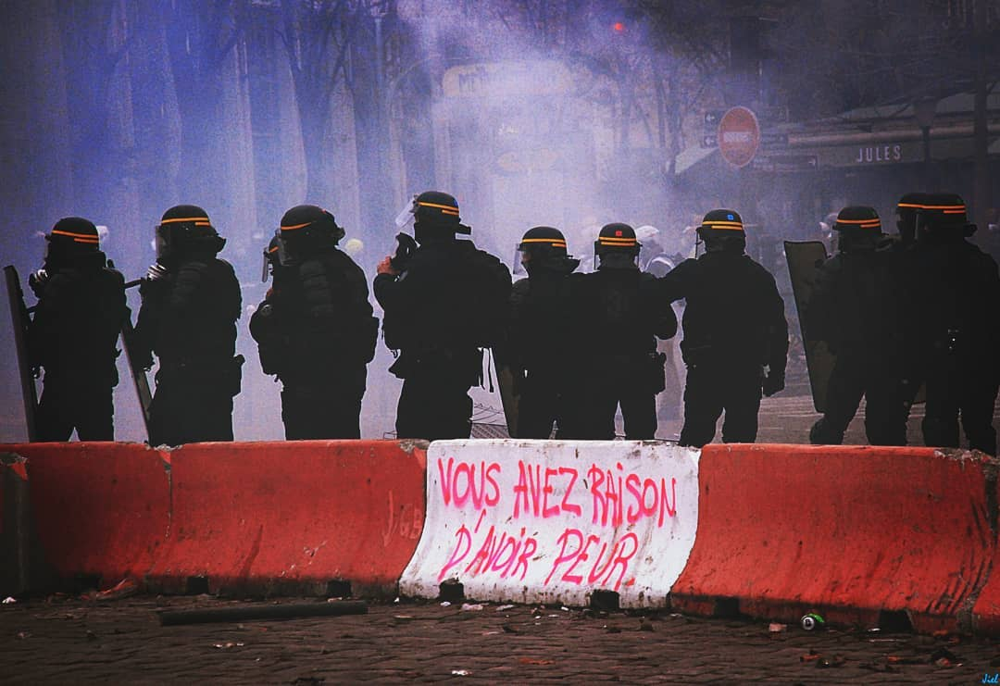
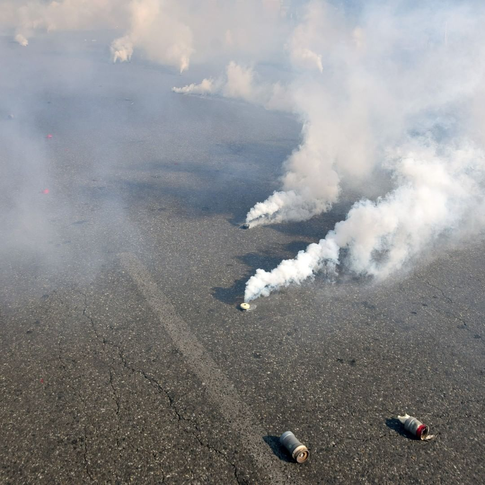
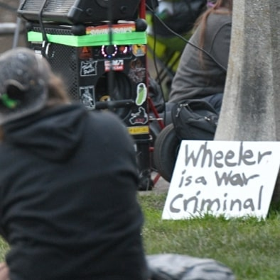
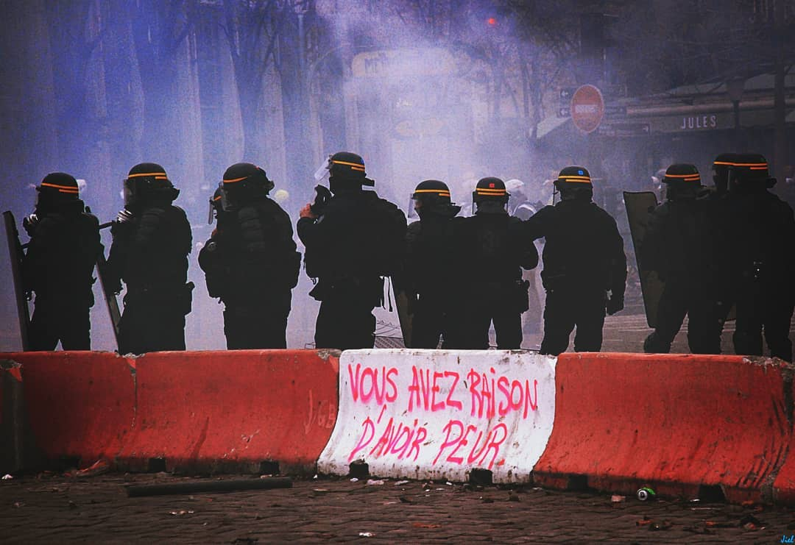
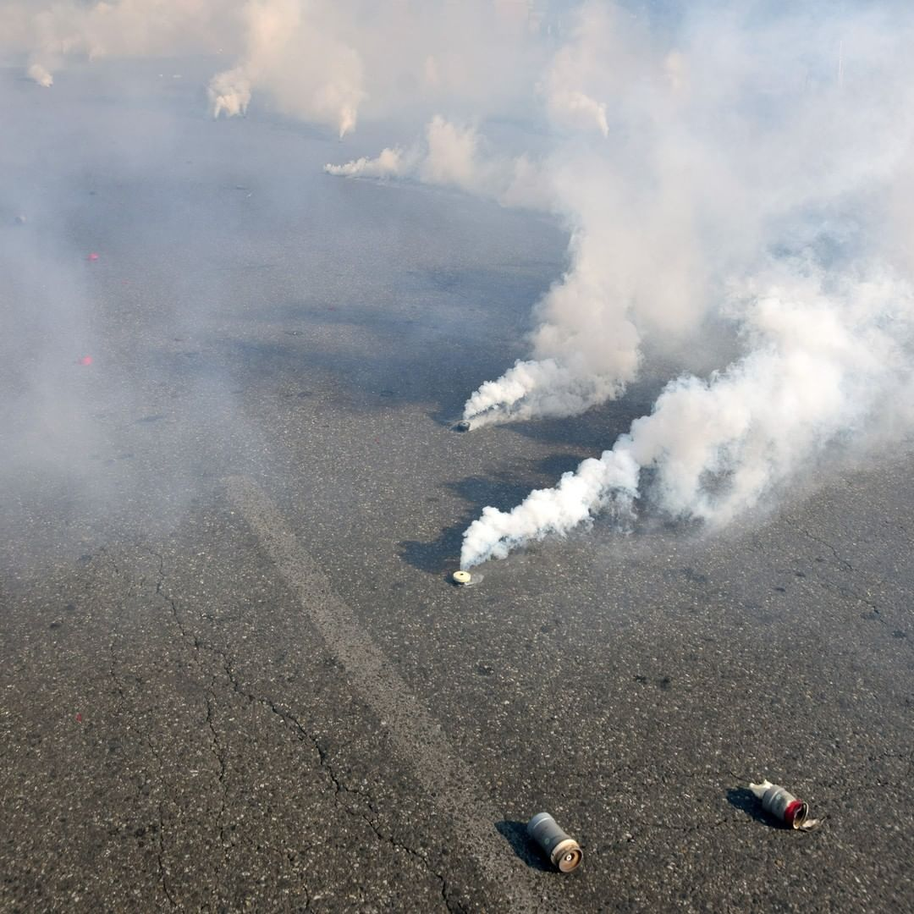
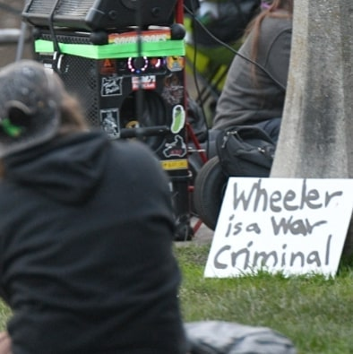
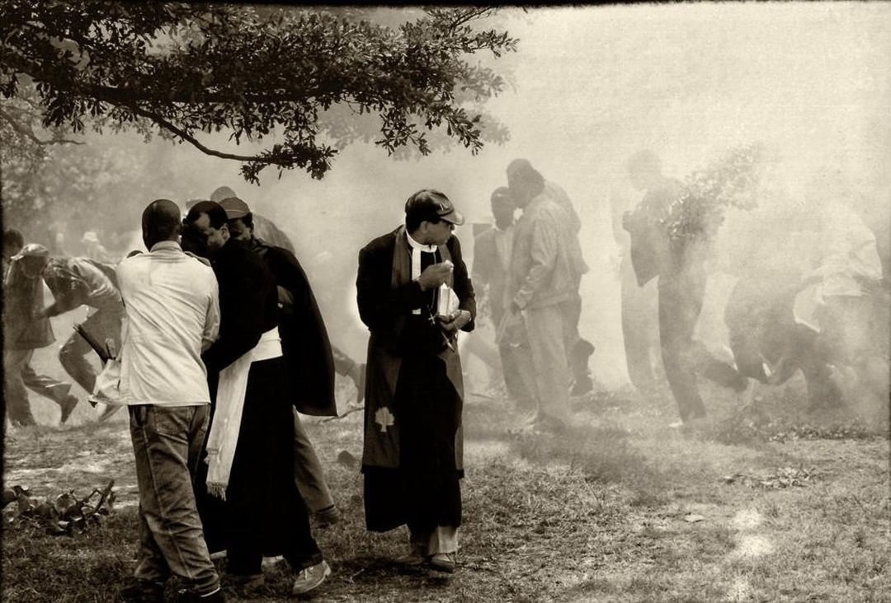
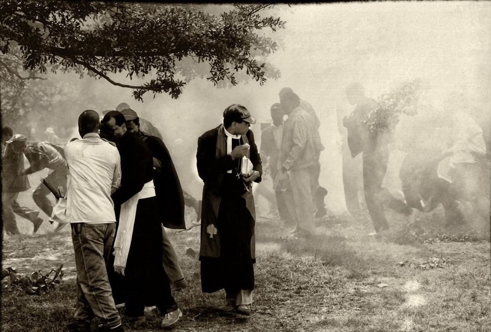

We are led to believe tear gas is a safe method of dispersing participants of “violent” protests. Tear gas is categorized as one of the “less-lethal weapons” since it is not designed to kill. In reality, the weapon can surely cause lethal effect. Police forces often use the weapon in large quantities or fire the cans directly at the (often peaceful) protesters.
With our two data scrapers (one for Instagram and one for twitter), we searched for footage of tear gas, mainly used during protests/demonstrations. By using public platforms, we aimed for the footage taken by the public, not the media nor the government. Since media footage can be framed, and in some cases, government controlled, we aim for a more transparent reality of where, when, and in what quantities tear gas is used, by giving the stage to the public.

 





 
